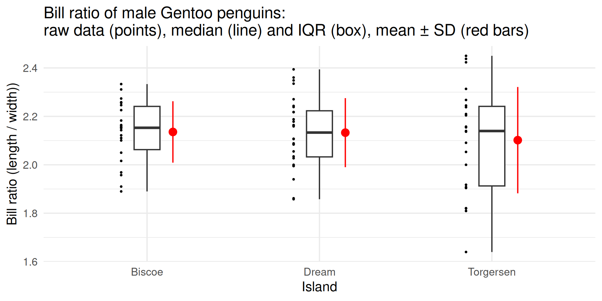

Summary statistics
Making sense of biological variation
Biological data are full of variation — no two cells, animals, or populations are exactly alike.essence of the data: where the centre lies, how spread out values are, and what shape the distribution takes.
Why summarise data?
Biological data are often large and messy.
Summary statistics reduce many data points down to a few values that capture the overall picture. Consider our penguins from last time.
This first plot contains the raw data of all recorded body masses for all 344 penguins.
The second contains a summary commonly known as a box plot.
Which one do you find easier for picking out meaningful differences?
Let’s return to our penguins to see the value of summarisation.
The plot on the left you can see the raw data: every penguin’s body mass. It’s rich, but hard to make meaningful comparisons between different species.
On the right is a box plot—a compact summary of the same data. The line in the box is the median, the box shows the middle 50%—the interquartile range—and the whiskers cover typical values. Points beyond that are potential outliers: interesting cases to check.
Which one do you find easier for picking out meaningful differences? What can you infer from the plot on the right? Male penguins tend to be larger than females within each species, and Gentoos tend to be larger than Adélies or Chinstraps. Body mass seems to be constant through time, although only three years were sampled.
Calculating means
Let’s start simple. Suppose we want the overall mean bill length across all penguins.
library (tidyverse)library (palmerpenguins)|> summarise (mean_bill_length = mean (bill_length_mm, na.rm = TRUE ))
# A tibble: 1 × 1
mean_bill_length
<dbl>
1 43.9
The average bill length of all penguins that were sampled is 43.9 mm.
Often we don’t just want one overall number, but a number for each group in the data. For example, what if we want the average bill length per species ?
|> group_by (species) |> summarise (mean_bill_length = mean (bill_length_mm, na.rm = TRUE ))
# A tibble: 3 × 2
species mean_bill_length
<fct> <dbl>
1 Adelie 38.8
2 Chinstrap 48.8
3 Gentoo 47.5
Here group_by() separates the data into groups by species, and summarise() calculates the mean within each of those groups.
Here’s a simple example showing how to calculate the mean bill length across all penguins. The average bill length of all penguins that were sampled is 43.9 mm.
Often we don’t just want one overall number, but a number for each group in the data. For example, what if we want the average bill length per species ?
Here group_by() separates the data into groups by species, and summarise() calculates the mean within each of those groups.
Tallying group sizes
Another simple question is, how many penguins do we have of each species?
|> count (species)The function count() is shorthand for:
|> group_by (species) |> summarise (n = n ())
How many of each were on each island?
|> count (species, island)
# A tibble: 5 × 3
species island n
<fct> <fct> <int>
1 Adelie Biscoe 44
2 Adelie Dream 56
3 Adelie Torgersen 52
4 Chinstrap Dream 68
5 Gentoo Biscoe 124
Only Adélie penguins were found on all three islands; Chinstrap and Gentoo were only recorded on Dream and Biscoe, respectively.
Notice count() hasn’t given us a zero-count for Chinstraps and Gentoos on those other islands. We can add the zeros in using complete():
|> count (species, island) |> complete (species, island, fill = list (n = 0 ))
# A tibble: 9 × 3
species island n
<fct> <fct> <int>
1 Adelie Biscoe 44
2 Adelie Dream 56
3 Adelie Torgersen 52
4 Chinstrap Biscoe 0
5 Chinstrap Dream 68
6 Chinstrap Torgersen 0
7 Gentoo Biscoe 124
8 Gentoo Dream 0
9 Gentoo Torgersen 0
Here’s an example of how we can use the special function count to tally the number of each species. By giving ‘species’ as the argument to count, we tell R to provide a count of the number of occurrences of each species.
Count is simply shorthand for a combination of group_by, summarise, and n.
We can also give count two variables, species and island, to get a count of how many of each species were on each island.
Notice however that count() hasn’t given us a zero-count for Chinstraps and Gentoos on those other islands. We can add the zeros in using another function called complete()
Multiple summaries at once
We are not limited to one summary per group. For example, we might want the mean, the standard deviation , and the sample size all together.
|> group_by (species, sex) |> summarise (mean_length = mean (bill_length_mm, na.rm = TRUE ),sd_length = sd (bill_length_mm, na.rm = TRUE ),n = n ()
# A tibble: 8 × 5
# Groups: species [3]
species sex mean_length sd_length n
<fct> <fct> <dbl> <dbl> <int>
1 Adelie female 37.3 2.03 73
2 Adelie male 40.4 2.28 73
3 Adelie <NA> 37.8 2.80 6
4 Chinstrap female 46.6 3.11 34
5 Chinstrap male 51.1 1.56 34
6 Gentoo female 45.6 2.05 58
7 Gentoo male 49.5 2.72 61
8 Gentoo <NA> 45.6 1.37 5
The standard deviation , sd(), tells us something about the spread of the data around the mean, or how variable bill length is between different individual birds of the same species and sex. This provides a richer description of the variation in bill length than simply looking at the mean.
Often in biology, we want to summarise data in multiple ways at the same time. With summarise, we can compute multiple summaries at once. Here’s an example calculating the mean bill length, standard deviation, and number of penguins, separated by sex and species of bird.
Measures of central tendency
Different summaries describe the centre of the data in different ways.
Mean : arithmetic average; sensitive to extreme values.Median : middle value; robust to outliers.Mode : most common value; rarely used for continuous measures.
Example (mean and median flipper length by species):
# A tibble: 3 × 3
species mean_flipper median_flipper
<fct> <dbl> <dbl>
1 Adelie 190. 190
2 Chinstrap 196. 196
3 Gentoo 217. 216
The mean we looked at on the last slide is probably the one you’re most familiar with. It’s the arithmetic average — we add everything up and divide by how many measurements we have. The mean works well when our data follow a roughly bell-shaped, or normal, distribution, where values are fairly evenly spread around the centre–more on that later.
But not all biological data behave that nicely. Sometimes we have outliers — unusually large or small values — that can pull the mean away from where most of the data really sit. In those cases, the median can give a better sense of the centre. The median is simply the middle value when all measurements are ordered from smallest to largest. It’s robust to outliers, meaning it doesn’t get dragged around by extreme points.
There’s also the mode, which is the most common value. It’s useful when you’re working with categories—like the most common species or colour—but it’s rarely helpful for continuous measurements like length or mass.
So, different summaries tell slightly different stories about where the ‘centre’ lies.
Measures of spread
Two groups can have the same average but very different variability.
Range : max - min (influenced by outliers).Interquartile range (IQR) : the middle 50% of the data.Standard deviation (SD) : average distance from the mean.
Example (variation in flipper length by species):
# A tibble: 3 × 5
species min_flipper max_flipper iqr_flipper sd_flipper
<fct> <int> <int> <dbl> <dbl>
1 Adelie 172 210 9 6.54
2 Chinstrap 178 212 10 7.13
3 Gentoo 203 231 9 6.48
Two groups can have exactly the same average but look completely different once we consider how spread out the data are. Measures of spread tell us how consistent or variable our data are—whether all individuals are similar, or if some differ a lot from the rest.
The simplest measure is the range, which is just the maximum minus the minimum value. It gives a quick sense of spread but can be distorted by a single outlier.
The interquartile range, or IQR, focuses on the middle 50% of the data. It’s much more robust—less sensitive to extreme values—and is what the width of a box in a box plot represents.
And then there’s the standard deviation, or SD. This tells us, on average, how far each value sits from the mean. A small SD means most individuals are close to the mean; a large SD means there’s a lot of variability.
In this next example, we’re comparing variation in flipper length between penguin species. Even if their averages are similar, the spread gives us a sense of how consistent each species is.
When to use which?
Different measures of spread are useful for describing the data in different situations:
Mean + SD : Best when data are roughly symmetric (bell-shaped) and not affected by extreme values.Median + IQR : Best when data are skewed or contain outliers, because they are more robust.Range : Good for reporting extremes (minimum and maximum), but can be misleading if one unusual value dominates.
Always think about the biological question: are you interested in the “typical” value, the variability, or the extremes?

Different measures of spread are useful in different situations, and it’s worth matching the summary to the kind of data you have.
When your data are roughly symmetric—think of that nice bell-shaped curve—and there aren’t any extreme values, you can report the mean and standard deviation. Together, they describe the typical value and the average variation around it.
If the data are skewed or contain outliers, the median and interquartile range are better. They focus on the middle of the data and aren’t thrown off by a few extreme individuals.
The range—the minimum and maximum—is useful when you want to emphasise the extremes, like the smallest and largest animals measured. But remember, a single unusual value can make the range look huge.
So always come back to your biological question: are you trying to describe what’s typical, how variable individuals are, or what the limits of your data look like? That choice should guide which summary you report.
Standard deviation (SD) vs standard error (SE)
SD and SE are often confused, but they mean different things.
Standard deviation (SD) : Describes how spread out the data are around the mean.
Standard error (SE) : Describes how precisely the mean has been estimated. It depends on both the spread of the data and the sample size.
SE is related to SD through the following formula: \[ SE = \frac{SD}{\sqrt{n}} \] You may see means reported with either SD or SE (e.g. mean ± SD, mean ± SE). They are not interchangeable: use SD to show biological variation, and SE to show precision of the mean. We will revisit SE when we look at the t -test.
I want to end by briefly talking about two measures of spread that are often confused in biology, the standard deviation and the standard error.
People often mix up standard deviation and standard error, but they answer very different questions.
The standard deviation, or SD, describes how spread out the data themselves are. It tells us about biological variation—how much individuals differ from each other. For example, how variable are the flipper lengths among individual Gentoo penguins?
The standard error, or SE, is about precision. It tells us how precisely we’ve estimated the mean. SE depends on both the variation in the data and the sample size—larger samples give smaller SEs because our estimate of the mean becomes more reliable.
They’re connected mathematically: SE equals SD divided by the square root of n, the sample size. So as you collect more data, SE gets smaller, but SD stays the same because the biological variation hasn’t changed.
You’ll often see results reported as mean ± SD or mean ± SE. They are not interchangeable. Use SD when you want to show biological variation, and SE when you want to show how precise your estimate of the mean is. We’ll return to SE later when we discuss the t-test and confidence intervals.
Recap & next steps
Summarisation helps us see patterns in messy biological data.
summarise() and group_by() are the core tidyverse tools.Helper functions like n(), mean(), and count() make common tasks quick.
Always watch out for missing values!
We’ll build on the tidyverse skills you’ve learned now to tackle one of the most important aspects of data analysis and scientific communication, data visualisation, in the next session.
See you next time… Image by Christopher Michel CC BY-NC-SA 2.0
To wrap up—summarising data is how we turn messy biological variation into something we can actually interpret.
We’ve seen how summarise() and group_by() work together to create tidy summaries, and how helper functions like n(), mean(), and count() make quick work of common calculations. And remember, missing values can quietly cause errors or distort your results, so always check for them.
In the next session, we’ll take these summaries and bring them to life through data visualisation—one of the most powerful ways to explore patterns and communicate science clearly.